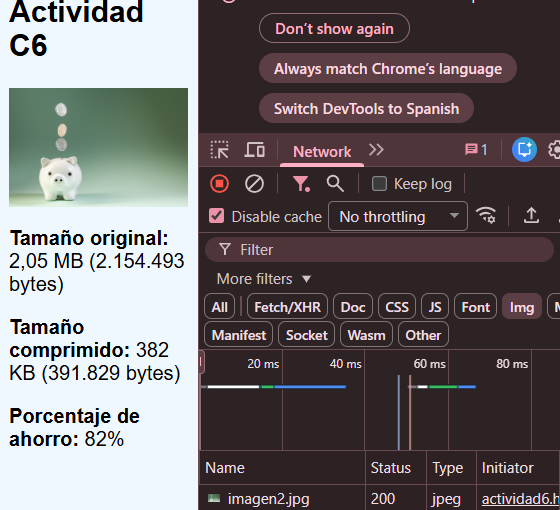
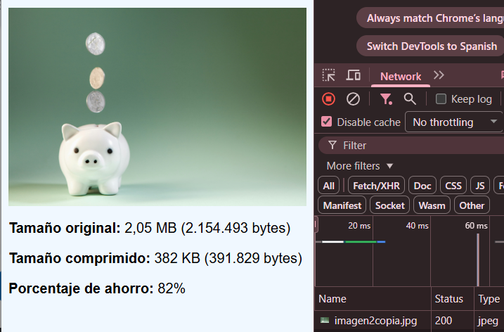

Tamaño original: 2,05 MB (2.154.493 bytes)
Tamaño comprimido: 382 KB (391.829 bytes)
Porcentaje de ahorro: 82%
Vemos la pestaña Network -> Name para comprobar que se cambia de imagen
- Cambia a imagen2 cuando la pantalla es pequeña.

- Cambia a imagen2copia cuando la pantalla es grande.
